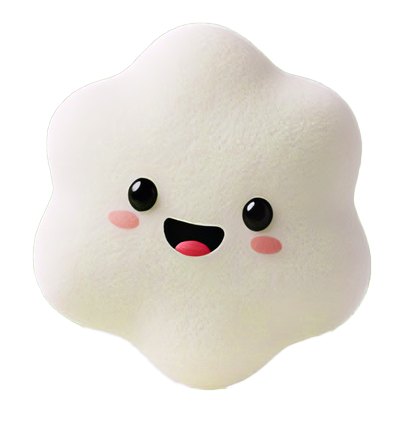

Fermentado artesanalmente por 48 horas. Sin conservantes, 100% natural y con el cariño que tu cuerpo merece.
Quiero mi Kefivida


El 90% de la serotonina (la hormona de la felicidad) se produce en tu intestino. Un microbioma sano es tu mejor escudo contra el agotamiento.
Recupera las bacterias buenas que el estrés y la mala alimentación eliminan de tu día a día.
Olvídate de los bajones de fatiga por la tarde. Una nutrición viva que se siente inmediatamente en el cuerpo.
Dile adiós a la pesadez y a la hinchazón estomacal después de tus comidas en la oficina.
Más que una bebida, el kéfir es un ecosistema vivo. Es un superalimento fermentado que aporta una concentración de probióticos, bacterias benéficas y levaduras muy superior a la de cualquier yogurt comercial, diseñado para restaurar tu equilibrio interior.
Lo que popularmente conocemos como "animalitos", son en realidad nódulos de búlgaros. No son animales, sino una poderosa matriz natural de probióticos. Nosotros los cuidamos y alimentamos con leche de vaca de la más alta calidad; ellos se encargan de fermentarla para crear la magia del auténtico Kefivida.
| Característica | Comercial | KefiVida |
|---|---|---|
| Frescura | Semanas en estante | 1 o 2 días antes |
| Ingredientes | Azúcar y espesantes | 100% Naturales |
| Origen | Procesamiento industrial | Artesanal Local (GT) |
Mejora tu perfil lipídico de forma completamente natural y efectiva.
Mantiene tu corazón sano para una vida cotidiana mucho más activa.
Fortalece la conexión biológica directa entre tu intestino y tu cerebro.
Calma y protege el tejido de tu sistema digestivo de forma inmediata.
Promueve una depuración natural y efectiva de los filtros de tu organismo.
Consigue un metabolismo activo, mucho más eficiente y equilibrado.
Potencia tu sistema inmunológico cada día a través de probióticos reales.
Mejora significativamente la absorción de calcio y minerales esenciales.

Contáctanos vía WhatsApp y selecciona tu tiempo de fermentación ideal (24 o 48 horas).
Preparamos tu bebida a mano y bajo pedido, asegurando un proceso natural y cuidadosamente controlado.
Llevamos el bienestar hasta ti. Validaremos tu ubicación por WhatsApp para confirmarte la cobertura y el costo de envío.
¿Estás listo para sentir la diferencia real? Únete a cientos de personas que ya transformaron su digestión y energía estomacal.
¡únete al reto!